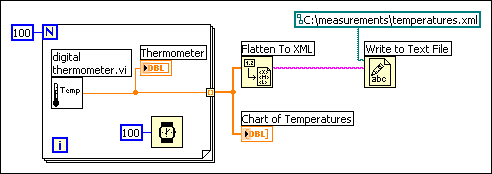
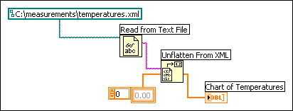

Converting LabVIEW data to XML formats the data so that when you save the data to a file, you easily can identify the value(s), name(s), and type of the data from the tags that describe the data. For example, if you convert an array of temperature values to XML and save that data to a text file, you easily can identify the temperature values by locating the <Value> tag that identifies each temperature.
Use the Flatten To XML function to convert a LabVIEW data type to XML format. The following block diagram generates 100 simulated temperatures, plots the array of temperatures to a chart, converts the array of numbers to the XML format, and writes the XML data to the temperatures.xml file.

Use the Unflatten From XML function to convert a data type in the XML format into LabVIEW data. The following block diagram reads the 100 temperatures in the temperatures.xml file and plots the array of temperatures to a chart.

|
Note��Although you can flatten and unflatten LabVIEW variant data to and from XML, LabVIEW returns an error if the variant data is an element of a cluster or is an array of variants. |
Refer to the labview\examples\File IO\XML\Flatten and Unflatten XML\Flatten and Unflatten XML.lvproj for examples of converting to and from the XML format.
 Open example�
Open example�
 Find related examples
Find related examples
LabVIEW converts data to an established XML schema. Currently, you cannot create customized schemas, and you cannot control how LabVIEW tags each piece of data. Also, you cannot convert entire VIs or functions to XML.
The predefined XML schema that LabVIEW uses is LVXMLSchema.xsd located in the labview\vi.lib\Utility directory. You can open the file in a text editor to read the schema.